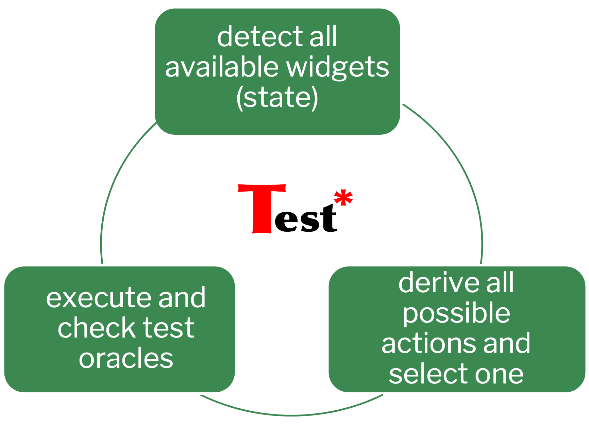

29 July 2024 – 6 October 2024 | Cheras, Kuala Lumpur
Oppstar Berhad, established in 2014, is a Malaysian leader in the semiconductor industry, specializing in front-end Integrated Circuit (IC) design. With over 200 skilled professionals, Oppstar offers end-to-end IC design solutions across telecommunications, automotive, consumer, and industrial electronics sectors, contributing significantly to Malaysia’s high-tech growth.
Implemented automated monkey testing by configuring TESTAR to simulate random inputs, detecting bugs such as crashes, freezes, and unresponsive components. These efforts improved software stability, cybersecurity, and user trust.

Contributed to setting up GitLab CI/CD pipelines by creating .gitlab-ci.yml files,
managing environments, and automating builds, testing, and deployment.
This ensured faster development cycles, consistent deployments, and better collaboration.
Designed Python scripts to automate data searching and table creation, integrated with PowerShell for accessibility. Output tables were generated in CSV/Excel format, reducing manual workload and ensuring structured data handling.
My internship at Oppstar Technology was a transformative journey. I developed strong technical skills in software testing, CI/CD automation, and Python programming, while also improving teamwork, communication, and adaptability. This experience strengthened my confidence to contribute to future software engineering challenges and prepared me for a career in the tech industry.
Photo 1: Working at Oppstar office
Photo 2: Final presentation session
Photo 3: Collaboration with supervisor and team